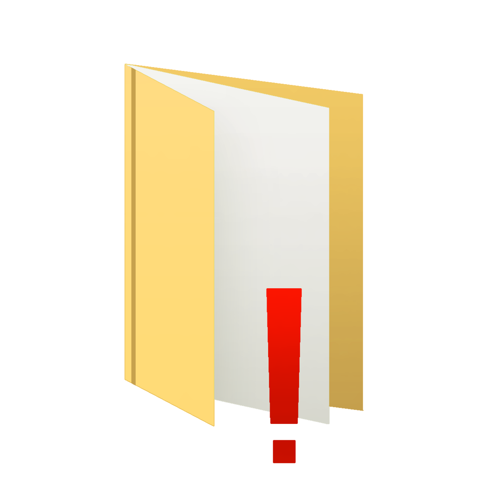

| :/ главная страница |
| разделы |
|

Копии |
|
Лобби |
|
Нигде |
|
Другое |
ваш вход был задокументирован.
активные задания на данный момент:
- [ВЫСОКИЙ ПРИОРИТЕТ] узнать по какой причине 9и не был удален полностью(стал призраком)
- [следить за стабильностью обновления YOUR_PAST-D
скрывать существование КОСМОС или хотя бы личность [rx_iris] и YOUR_PAST-D(если нас еще можно скрыть, то 4 никак из за того какую роль он выполняет.)
наша работа оставляет большие изменения на работе системы и иногда приходится взаимодействовать с лицами за пределами нашей вселенной(но крайне не рекомендуется контактировать с ними), так что для удобства и собственного рассудка стоит расставить границы понимания где мы, а где другие:
archive - условное название нашей вселенной наша работа - очистка вселенной от мусора что нагружает ее и так комплексную и сложную работу. услуги определенным лицам мы не оказываем. конфиденциальную информацию и личности сотрудников не раскрываем, предпочитаем оставаться анонимными в пределах нашей вселенной. можем лишь попытаться открыть вам глаза на правду, что вышестоящие чины - врут. никакой бог не следит за порядком во вселенной, этим занимаемся мы.
rejection - там остался только та версия паста и пару сущностей, КРАЙНЕ не рекомендуется к любым контактам.
insight - главное действующее лицо та версия 4. вы скорее всего не заметите его присутствия. часто находится на пересечении нашей и его вселенной. если он все таки попался вам на глаза, просто сделать вид что его нет.
“запределье” - буквально все что находится за пределами нашей реальности. наши вселенные и мы лишь папки с файлами на рабочем столе одного компьютера другой реальности. нам неизвестно что находится в ней. только то что компьютер стоит в одной из множества бесконечных комнат и коридоров и создатель всего этого 11.
отделы сети КОСМОС
отдел документацийруководитель : YOUR_PAST-D
функции : хранение и первичный анализ всех обнаруженных копий и аномалий.
экстренная связь : [ канал открыт ]
отдел исполнения
руководитель [rx_iris]
функции : поиск, задержание, утилизация, “переговоры”
экстренная связь : [ нет доступа ]
новости :
на счет “новой политики” не уверен, возможно мы сделаем упор на что то другое, но работайте пока по тому же плану.
4 стерли какую то часть памяти, лучше ему не напоминать про 9и. работой так же не нагружать